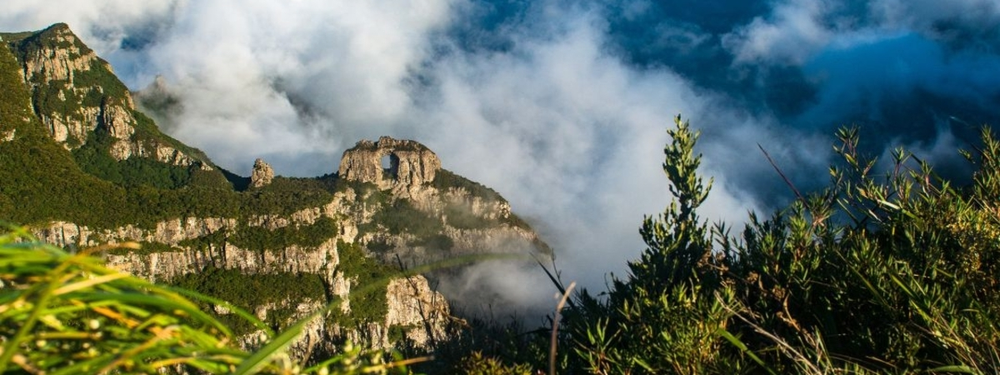
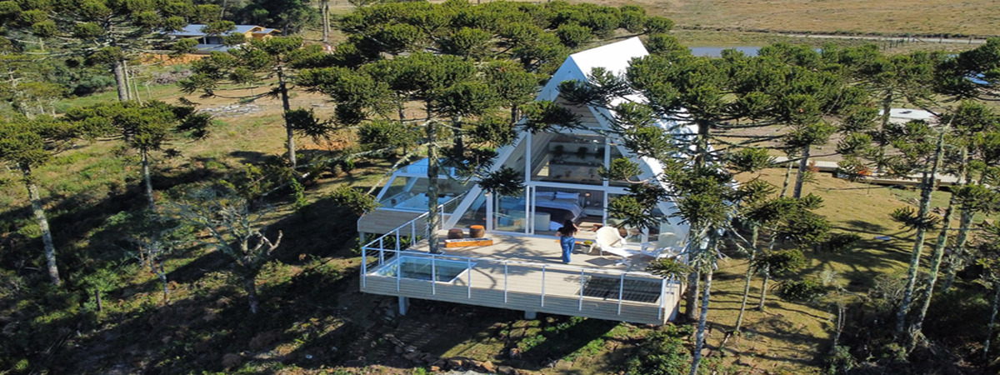
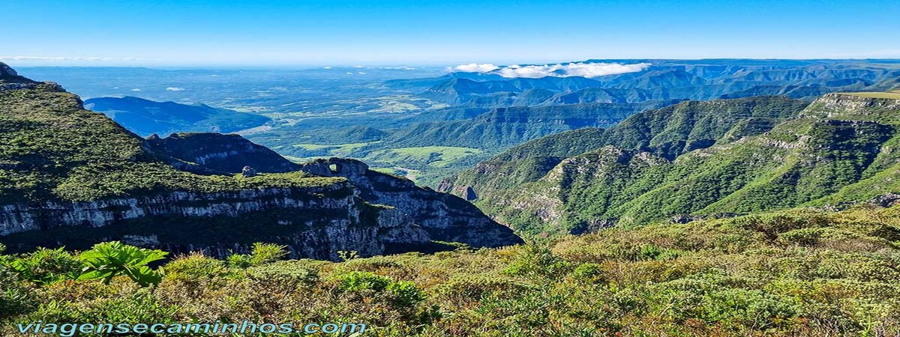
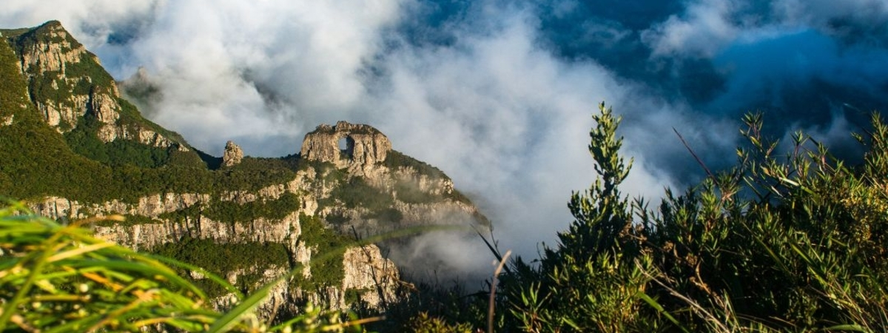
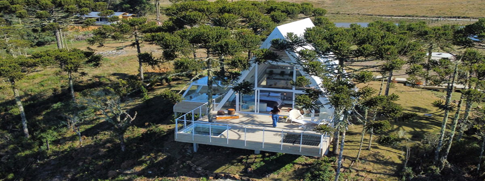
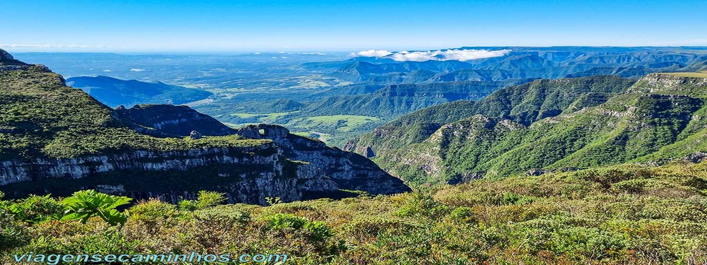

Serra do Corvo Branco
A Serra do Corvo Branco possui o maior corte em rocha no Brasil com 90 metros de profundidade e é uma das principais atrações de Urubici SC. Sua denominação provém da existência de aves do mesmo nome da região.
A serra é um trecho da rodovia SC-370, situada numa região de topografia acidentada, entre fendas e montanhas íngremes. Fica a 1.470 metros de altitude, entre os municípios de Urubici, na Serra Catarinense e Grão Pará, em baixo da serra.